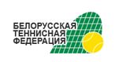
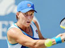

В городе Сан Луис Портоси, что в Мексике, проходит юниорский аналог Кубка Федерации (неофициального командного чемпионата мира среди женских национальных команд) – Junior Fed Cup by BNP Paribas. В турнире, которому был дан старт в минувший вторник, принимают участие 16 сильнейших команд теннисисток в возрасте до 16 лет.
Незаслуженый мастер спорта
Опыт работы 4 года
Руководит тренеровками шести теннисистов списка Top-100 Belarus. Не пьёт.
Незаслуженый мастер спорта
Опыт работы 4 года
Руководит тренеровками шести теннисистов списка Top-100 Belarus.
Кандидат на звание кандидата
Опыт работы 3 года.
Занимает 12-ю позицию среди теннесисток Беларуси, проводит занятия только с подготовлеными игроками
Кандидат на звание кандидата
Опыт работы 3 года.
Занимает 12-ю позицию среди теннесисток Беларуси, проводит занятия только с подготовлеными игроками
9 сентября 2010
Российская теннисистка Светлана Кузнецова после матча стартового раунда US Open-2010 против 40-летнец японки Кимико Дате-Крумм поведава о своих далекоидущих планах. Кузнецова с победы начала выступление на Открытом чемпионате США по теннису …
15 августа 2010
12 июля 2010
8 августа 2010
15 августа 2010
12 июля 2010
{kind=link}